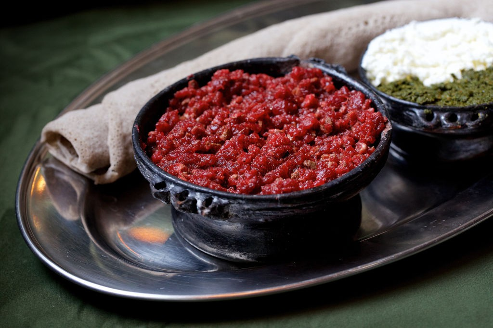

Ethiopain Tradtional Foods/Kitfo

Kitfo: Made from the leanest meat, kitfo is similar to French steak tartare. The meat is minced and warmed in a pan with a little butter, the spice blend mitmita and sometimes thyme.
Ingredients
- Leanest meat
- The spice blend mitmita
- Thyme
- Fresh and Melted butter
- Grind collection of Spices
Steps to prepare
- Grind Neccessary Spices
- Melt the fresh better with spices
- Prepare the Leanest meet and cut with nife in small pices
- Mix the meeet with the spices and butters
- Put it on feeding pots